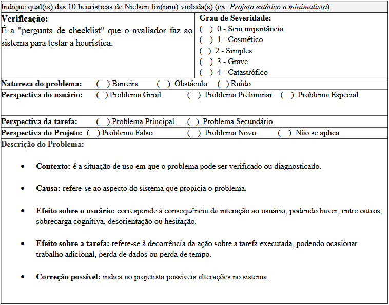

Sites avaliados
Introdução¶
Uma avaliação de IHC (Interação Humano-Computador) é essencial para garantir a qualidade de um software, sendo útil para identificar problemas de interface e corrigi-los antes da entrega final. A avaliação de IHC parte das necessidades dos stakeholders e dos requisitos do projeto, ela atua na verificação e validação de uma interface, envolve aspectos técnicos e humanos, e deve ser abordada em três perspectivas: a de quem concebe a solução, de quem a utiliza e de quem a constrói. Por isso, é fundamental planejar uma avaliação que seja capaz de fornecer esta visão plurilateral e sociotécnica
Metodologia de avaliação¶
O planejamento da avaliação será estruturado com base no framework DECIDE, que define o processo de uma avaliação de IHC se baseando nos seguintes passos (BARBOSA et al., 2021):
- D: determinar os objetivos da avaliação
- E: explorar perguntas a serem respondidas com a avaliação.
- C: (choose) escolher os métodos de avaliação
- I: identificar e gerir as questões práticas da avaliação.
- D: decidir como lidar com as questões éticas
- E: (evaluate) avaliar, interpretar e apresentar os resultados
Ainda utilizamos o formulário apresentado no Quadro I, para padronização das análises.

Fonte: MACIEL et al. ([2004?], p. 13).
Definições para classificação de problemas¶
Para o preenchimento dos relatórios de inspeção, serão utilizadas as seguintes definições e critérios baseados em Maciel et al. ([2004?]) e na escala de Nielsen (1994 apud MACIEL et al., [2004?]).
1. Natureza do Problema¶
Determina a recorrência e o impacto no aprendizado do usuário.
| Classificação | Descrição |
|---|---|
| Barreira | Aspecto onde o usuário esbarra sucessivas vezes e não aprende a superá-lo. O erro persiste em futuras realizações da tarefa. |
| Obstáculo | Aspecto onde o usuário esbarra, mas aprende a superá-lo após o contato inicial. |
| Ruído | Aspecto que diminui o desempenho na tarefa e gera uma má impressão do sistema, sem necessariamente impedir a conclusão. |
2. Perspectiva da Tarefa e do Usuário¶
Define o alcance do problema conforme o contexto de uso.
- Perspectiva da Tarefa:
- Principal: Atrapalha tarefas frequentes ou de alta importância.
- Secundário: Atrapalha tarefas pouco frequentes ou de baixa importância.
- Perspectiva do Usuário:
- Geral: Afeta qualquer tipo de usuário.
- Preliminar: Afeta usuários novatos ou intermediários.
- Especial: Afeta usuários com necessidades especiais (acessibilidade).
3. Perspectiva do Projeto (Categorias de Revisão)¶
Observação: Estas categorias não devem ser preenchidas na primeira avaliação heurística. * Falso Problema: Aspecto classificado como erro que, na realidade, não traz prejuízo ao usuário ou à tarefa. * Novo: Problema que surgiu como consequência direta da correção de um erro anterior.
4. Graus de Severidade¶
Utilizado para priorizar o esforço de correção do sistema.
| Grau | Classificação | Definição |
|---|---|---|
| 0 | Sem Importância | Não afeta a operação; não é necessariamente um problema de usabilidade. |
| 1 | Cosmético | Reparo de baixa prioridade, realizado apenas se houver tempo disponível. |
| 2 | Simples | Problema de baixa prioridade de correção. |
| 3 | Grave | Alta prioridade; deve ser reparado para evitar prejuízo à experiência. |
| 4 | Catastrófico | Impeditivo; deve ser reparado obrigatoriamente antes da disponibilização. |
Lista de heurísticas¶
Para a análise da interface, serão consideradas as dez heurísticas de usabilidade propostas por Nielsen (BARBOSA et al., 2021):
- Visibilidade do estado do sistema: O sistema deve sempre manter os usuários informados sobre o que está acontecendo através de feedback adequado e em tempo hábil.
- Correspondência entre o sistema e o mundo real: O sistema deve utilizar palavras, expressões e conceitos familiares ao usuário, evitando jargões técnicos. Deve-se seguir convenções do mundo real, apresentando informações em ordem lógica e natural.
- Controle e liberdade do usuário: Caso o usuário realize ações equivocadas, o sistema deve oferecer uma "saída de emergência" clara para abandonar o estado indesejado sem diálogos extensos. Deve permitir as funções de desfazer e refazer.
- Consistência e padronização: O usuário não deve ter dúvidas se palavras ou ações diferentes significam a mesma coisa. É necessário seguir as convenções da plataforma ou ambiente computacional.
- Reconhecimento em vez de memorização: Objetos, ações e opções devem estar visíveis. O usuário não deve precisar memorizar informações de uma parte da aplicação para usar em outra. Instruções de uso devem estar facilmente acessíveis.
- Flexibilidade e eficiência de uso: Aceleradores (atalhos) — muitas vezes imperceptíveis ao usuário novato — podem tornar a interação mais rápida para o experiente. O sistema deve permitir a customização de ações frequentes.
- Projeto estético e minimalista: As interfaces não devem conter informações irrelevantes ou raramente necessárias. Cada unidade extra de informação compete com as unidades importantes pela atenção do usuário.
- Prevenção de erros: Mais eficiente do que boas mensagens de erro é um projeto cuidadoso que evite que os problemas ocorram em primeiro lugar.
- Ajuda aos usuários para reconhecerem, diagnosticarem e recuperarem-se de erros: As mensagens de erro devem ser expressas em linguagem clara (sem códigos), indicar precisamente o problema e sugerir uma solução construtiva.
- Ajuda e documentação: Embora o ideal seja um sistema intuitivo, a documentação deve ser oferecida. Ela deve ser fácil de consultar, focada na tarefa, fornecer passos concretos e não ser excessivamente extensa.
LISTA DE SITES AVALIADOS¶
Beto Carrero World (link de acesso)¶

O site oficial do Beto Carrero World é uma plataforma de e-commerce voltada para a venda de passaportes, serviços de alimentação e opcionais de lazer.
Durante a avaliação, foram identificadas falhas críticas na arquitetura de informação, como o agrupamento semântico incorreto de itens (ex: serviços de alimentação categorizados sob o rótulo de "Passaportes"). Além disso, o sistema apresenta inconsistências na visibilidade do estado, dificultando a distinção entre botões de navegação e botões de ação final. Essas violações de heurísticas elevam a carga cognitiva e podem induzir o usuário ao erro durante o fluxo de fechamento do pedido.
[ Analise Detalhada realizada por Philipe Amâncio e Hugo Freitas. ]
Receita Federal do Brasil (link de acesso)¶
O portal da Receita Federal representa um ecossistema complexo de serviços governamentais, sendo um objeto de estudo crítico para a análise de IHC devido à sua natureza institucional e à diversidade de perfis atendidos, desde o contribuinte iniciante até o profissional autônomo.
A avaliação por inspeção revelou que, embora o sistema seja funcional, ele padece de uma "infoxicação" (excesso de informação), onde a falta de hierarquia visual e o ruído de conteúdos institucionais obscurecem as tarefas principais. Foram identificadas violações severas de usabilidade, especialmente no mecanismo de busca, que ignora a Correspondência com o Mundo Real ao utilizar termos estritamente burocráticos. A análise também destaca falhas na Prevenção de Erros em formulários e serviços digitais, onde a ausência de mensagens orientadas à solução gera obstáculos que impactam diretamente a eficácia da tarefa e a autonomia do cidadão.
[ Analise Detalhada realizada por Hugo Freitas. ]
Referências¶
BARBOSA, S. D. J. et al. Interação Humano-Computador e Experiência do Usuário. 1. ed. Rio de Janeiro: Autopublicação, 2021.
MACIEL, C. et al. Avaliação heurística de sítios na web. Niterói: Instituto de Computação - Universidade Federal Fluminense (UFF), [2004?].
Histórico de Versão¶
| Versão | Data | Descrição | Autor | Revisor |
|---|---|---|---|---|
| 1.0 | 11/04/2026 | Criação do documento | Vitor Evangelista | Ingrid Alves |
| 1.1 | 22/04/2026 | Adição do histórico de versão | Ingrid Alves | Hugo Freitas Silva |
| 1.2 | 24/04/2026 | Adequação ao feedback do professor | Philipe Amancio |